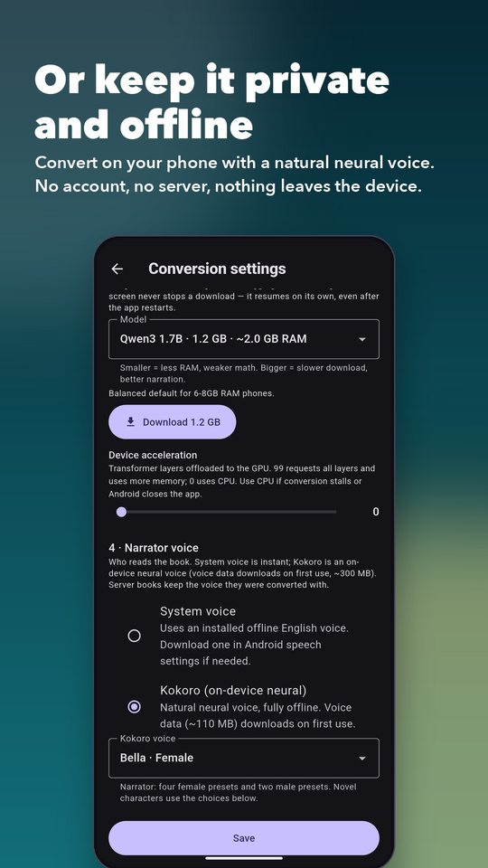
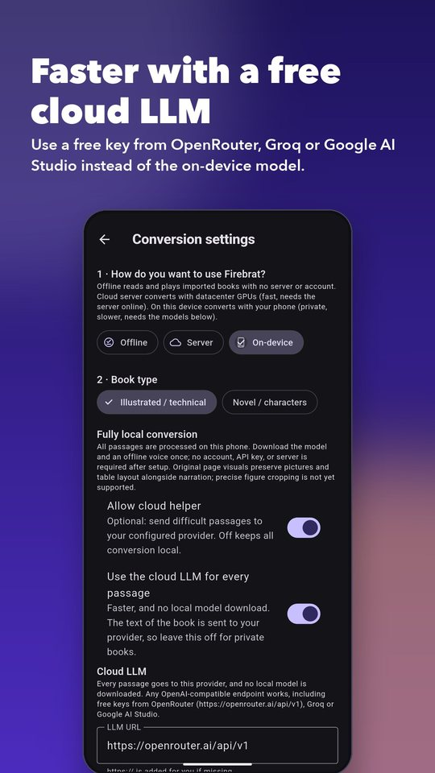
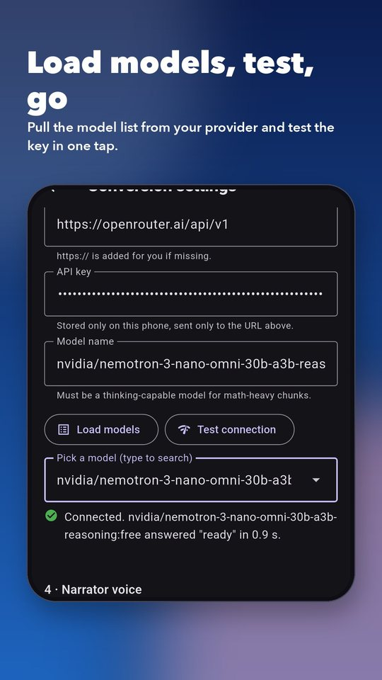
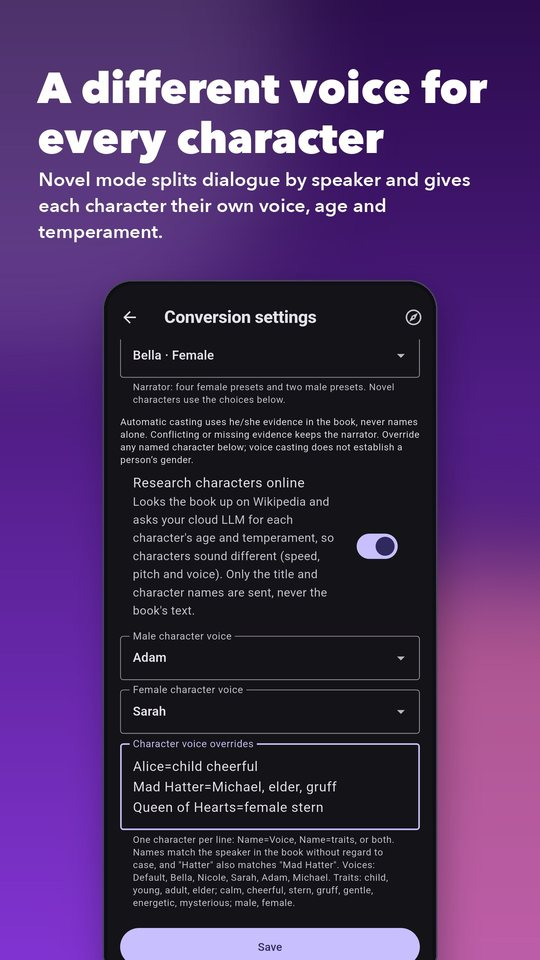
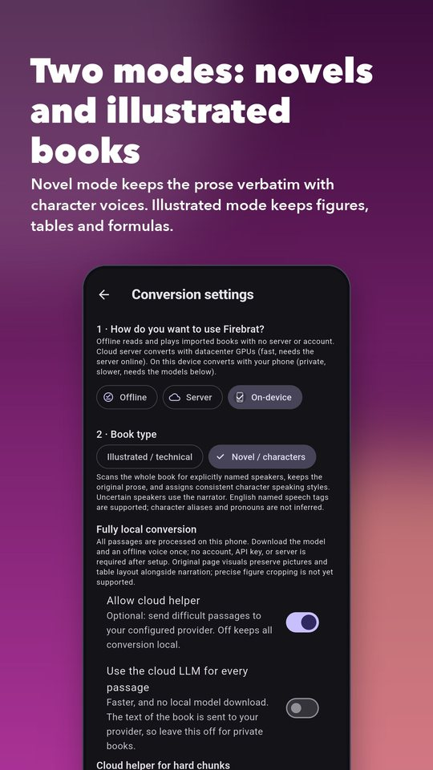
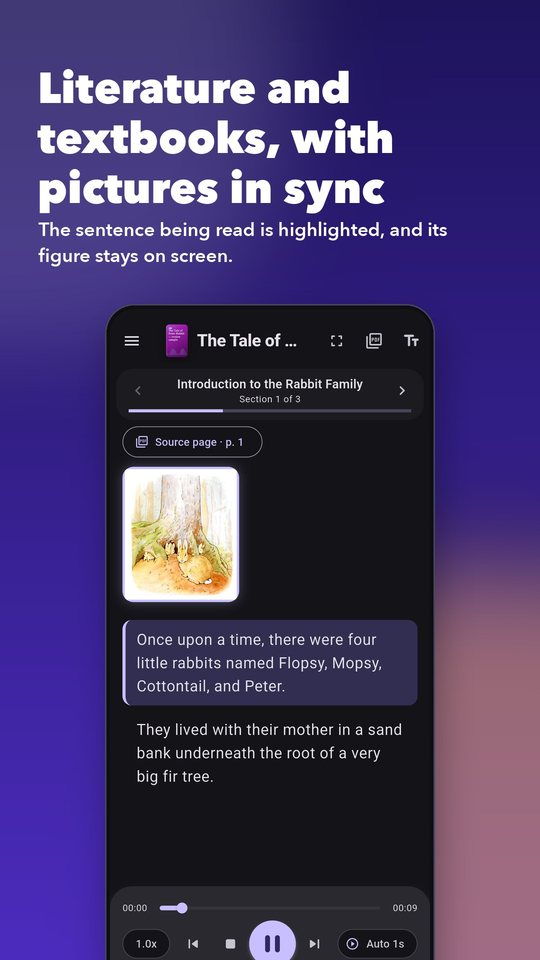
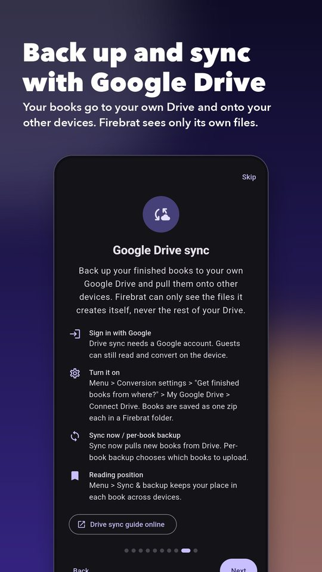

Firebrat can turn a PDF into an audiobook entirely on your phone, with nothing leaving the device, or use a free cloud LLM key to convert much faster. You choose per book, and you can change your mind any time.
Many people care more about privacy than convenience, so the most private option needs no account, no server and no key. The cloud options below are always opt-in.
Free LLM providers may log prompts. Use the on-device model for anything confidential.

A cloud model is far faster than a phone and needs no multi-gigabyte model download. Several services give out free keys that work with Firebrat, because they all speak the same OpenAI-compatible protocol.
:free. You can also let the app list them for you (step 5).https://openrouter.ai/api/v1 as the LLM URL, paste your key, then tap Load models. Pick a free model from the list (type to search).Free-tier limits: OpenRouter allows 20 requests a minute on free models, and 50 requests a day until you have purchased at least 10 credits, after which the daily limit is 1,000. Long books need many requests, so a free key suits shorter books, or lets you convert a longer book over a few days. Free model lists change often; always check the current list.
Create a key at console.groq.com/keys. LLM URL: https://api.groq.com/openai/v1. Tap Load models to see what your account can use.
Create a key at aistudio.google.com. LLM URL: https://generativelanguage.googleapis.com/v1beta/openai/. Google offers a free tier with its own rate limits; check the current limits on their pricing page.
OpenAI, nano-gpt, a local server such as Ollama or LM Studio on your network, and many others work the same way: URL, key, model name. The URL usually ends in /v1.


Easy passages stay on the phone; only equations, figures and tables go to the cloud. A good balance for private-leaning users.
Fastest. Skips the local model entirely, but all of the book’s text goes to your provider.
Cloud helper off. Slowest, most private. Nothing leaves the phone after the one-time downloads.
Besides PDFs and ZIPs of chapter PDFs, Firebrat converts DRM-free EPUB, MOBI, AZW and AZW3 ebooks, on your phone or on a server. Ebooks are read as text in reading order, using the book’s chapter titles, which makes them a great fit for Novel mode with character voices.
Bigger models read hard passages better but need more memory and time. Listed from lightest to heaviest (approximate RAM while converting). If Android closes the app or conversion stalls, step down a size or set the GPU acceleration slider to 0.
| Model | RAM | Best for |
|---|---|---|
| Qwen3 0.6B | ~1 GB | Lightest and fastest. Safe on 4–6 GB phones. |
| Gemma 3 1B | ~1.5 GB | Compact, text-only. Good for low-memory phones. |
| SmolLM2 1.7B | ~1.7 GB | Small general model, fine on 6 GB and up. |
| Qwen3 1.7B (default) | ~2 GB | Balanced choice for 6–8 GB phones. Start here. |
| Llama 3.2 3B | ~3 GB | Better quality for 8 GB phones. |
| Qwen3 4B, Gemma 3 4B, Phi-4 Mini | ~3.8 GB | Highest quality and heaviest. May run out of memory on 8 GB phones, especially with GPU offload. |
Choose the book type in Conversion settings › Book type.
Keeps the original prose word for word, splits dialogue by speaker, and gives each named character their own delivery. Speakers are recognised from explicit tags such as Alice said or “Hello,” Bob replied. Anything uncertain is read by the narrator.
Beyond male and female, each character can have an age (child, young, adult, elder) and a temperament (calm, cheerful, stern, gruff, gentle, energetic, mysterious). Age and temperament change speed, pitch and expressiveness, and spread characters across the available voices.
Set them yourself in Character voice overrides, one per line:
Alice=child cheerful
Mad Hatter=Michael, elder, gruff
Queen of Hearts=female sternNames match without regard to case, and a short name such as “Hatter” also matches “Mad Hatter”. Overrides that match nobody are reported in the conversion log, so typos are easy to spot.
Turn on Research characters online. Firebrat finds the book’s Wikipedia article and asks your LLM to describe each character’s age and temperament, then applies it. Only the title and character names are sent, never the book’s text. This needs an LLM URL, key and model (see above) or a server. Your own overrides always win over research, and any failure simply skips the step.
After a novel is converted, open Cast & voices (the people icon in the reader, or long-press the book in your library). It lists every speaker with their number of lines, shows what share of the book’s dialogue was attributed to a named character (the rest is read by the narrator), and shows each character’s age, temperament and voice, plus what the web research found and missed. A character appears only when the book tags their lines (“Elizabeth said”), so the percentage is the honest measure of coverage.
For textbooks, datasheets and papers: figures, tables and formulas stay on screen and highlighted exactly while they are being discussed, and Source page opens the original PDF page.



Keep your converted books safe and move them between devices through your own Google Drive.
Privacy: Firebrat asks only for access to files it creates itself (the “drive.file” permission). It cannot see or change anything else in your Drive. You can turn sync off at any time.

Firebrat opens a short guide the first time you start it, and you can reopen it whenever you like.
Open the menu and choose App guide.
Tap the compass icon at the top right of the screen.
Tap Take the app tour under the import button.
/v1, for example https://openrouter.ai/api/v1.Still stuck? Open an issue.